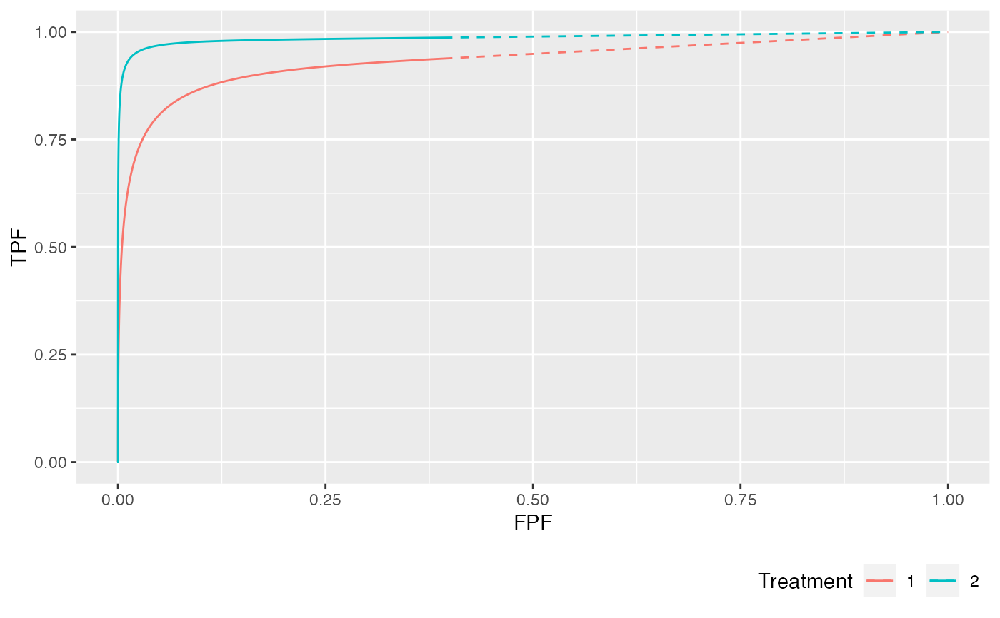
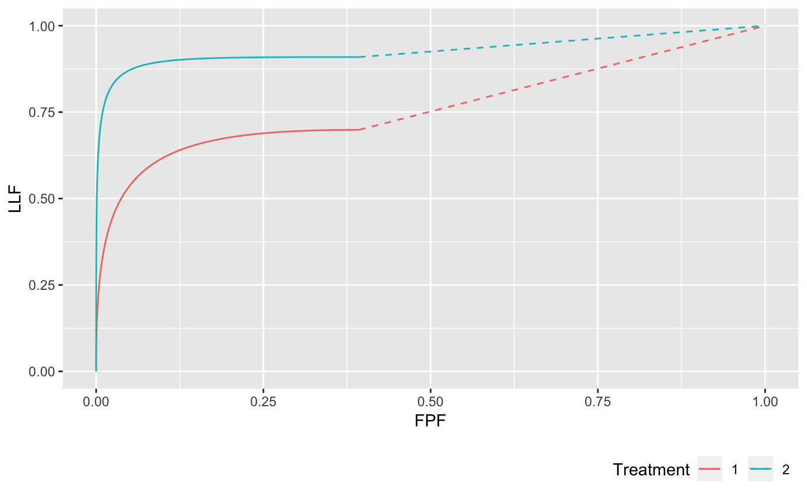
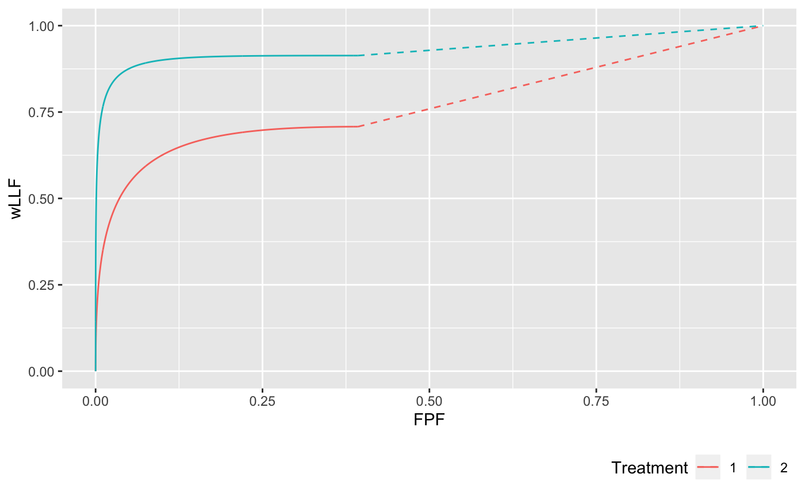
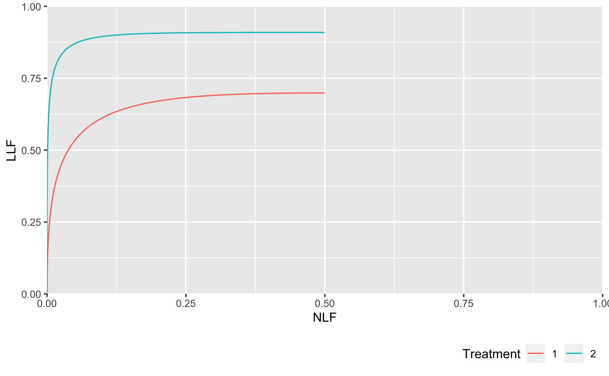

PlotRsmOperatingCharacteristics.RdVisualize predicted ROCs, AFROCs, wAFROCs, FROCs and pdfs (probability density functions of highest ratings, for non-diseased and diseased cases), for up to 2 sets of search model parameters. This function is useful as an instructional tool towards understanding the RSM.
PlotRsmOperatingCharacteristics (mu, lambda, nu, lesDistr, lesionWeights, type = "ALL", legendPosition = c(1,0), legendDirection = "horizontal", legendJustification = c(0,1), nlfRange = NULL, llfRange = NULL, nlfAlpha = NULL,myNegInf = -3)
| mu | Array, max length 2. The mean(s) of the Gaussian distribution(s) for the ratings of latent LLs (continuous ratings of lesions that are found by the observer's search mechanism) |
|---|---|
| lambda | Array, max length 2. The Poisson distribution intrinsic
parameter(s), which model the random numbers of latent NLs (suspicious
regions that do not correspond to actual lesions) per case, for up to two
treatments. The corresponding physical parameters are |
| nu | Array, max length 2. The binomial distribution success probability
intrinsic parameters, which model the random numbers of latent LLs
(suspicious regions that
correspond to actual lesions) per diseased case for up to two treatments;
the corresponding physical parameter is |
| lesDistr | Array, [1:maxLL,1:2]. The probability mass function of the lesion distribution for diseased cases. The first column contains the actual numbers of lesions per case. The second column contains the fraction of diseased cases with the number of lesions specified in the first column. The second column must sum to unity. |
| lesionWeights | Array, [1:maxLL,1:maxLL]. The weights (or clinical importances)
of the lesions. The 1st row contains the weight of the lesion on cases
with one lesion only, necessarily 1; the remaining elements of the row are
|
| type | The type of operating characteristic desired: can be " |
| legendPosition | The positioning of the legend: " |
| legendDirection | Allows control on the direction of the legend;
|
| legendJustification | Where to position the legend, default is bottom right corner c(0,1) |
| nlfRange | This applies to FROC plot only. The x-axis range, e.g., c(0,2),
for FROC plot. Default is " |
| llfRange | This applies to FROC plot only. The y-axis range, e.g., c(0,1),
for FROC plot. Default is " |
| nlfAlpha | Upper limit of the integrated area under the FROC plot.
Default is " |
| myNegInf | How close one approaches the end-point; the default is -3. This is used in the code to demonstrate continuity of the slope of the ROC at the end point; Online Appendix 17.H.3 |
A list of 6 elements containing six ggplot2 objects (ROCPlot, AFROCPlot wAFROCPlot, FROCPlot and PDFPlot) and two area measures (each of which can have up to two elements), the area under the search model predicted ROC curves in up to two treatments, the area under the search model predicted AFROC curves in up to two treatments, the area under the search model predicted wAFROC curves in up to two treatments, the area under the search model predicted FROC curves in up to two treatments.
ROCPlot The predicted ROC plots
AFROCPlot The predicted AFROC plots
wAFROCPlot The predicted wAFROC plots
FROCPlot The predicted FROC plots
PDFPlot The predicted pdf plots
aucROC The predicted ROC AUCs
aucAFROC The predicted AFROC AUCs
aucwAFROC The predicted wAFROC AUCs
aucFROC The predicted FROC AUCs
RSM is the Radiological Search Model described in the book.
For lesDistr, the sum over the second column must equal one.
If all cases contain same number of lesions, simply supply this number instead of
the matrix. If the argument is missing, the default value
of one lesion per diseased case applies.
In lesionWeights, the sum over each row (excluding -Inf) must be one.
The value -Inf should be assigned if the corresponding lesion
does not exist. Equal lesion weighting is applied if this argument is missing.
For example, if the maximum number of distinct lesion configurations per case
is 3 (e.g., 1, 2 and 4, implying there are no cases with 3 lesions), the
first column of lesDistr will be c(1,2,4). The second column might be
c(0.8, 0.15, 0.05), which sums to one, meaning 80% of cases have only one
lesion, 15% have two lesions and 5% have three lesions. The
lesionWeights matrix will be
[1:3,1:3], where each row will sum to one (excluding negative infinities).
Chakraborty DP (2006) A search model and figure of merit for observer data acquired according to the free-response paradigm, Phys Med Biol 51, 3449-3462.
Chakraborty DP (2006) ROC Curves predicted by a model of visual search, Phys Med Biol 51, 3463--3482.
Chakraborty, DP, Yoon, HJ (2008) Operating characteristics predicted by models for diagnostic tasks involving lesion localization, Med Phys, 35:2, 435.
Chakraborty DP (2017) Observer Performance Methods for Diagnostic Imaging - Foundations, Modeling, and Applications with R-Based Examples (CRC Press, Boca Raton, FL). https://www.crcpress.com/Observer-Performance-Methods-for-Diagnostic-Imaging-Foundations-Modeling/Chakraborty/p/book/9781482214840
## Following example is for mu = 2, lambda = 1, nu = 0.6, in one treatment and ## mu = 3, lambda = 1.5, nu = 0.8, in the other treatment. 20% of the diseased ## cases have a single lesion, 40% have two lesions, 10% have 3 lesions, ## and 30% have 4 lesions. lesDistr <- rbind(c(1, 0.2), c(2, 0.4), c(3, 0.1), c(4, 0.3)) ## On cases with one lesion the weights are 1, on cases with 2 lesions the weights ## are 0.4 and 0.6, on cases with three lesions the weights are 0.2, 0.3 and 0.5, and ## on cases with 4 lesions the weights are 0.3, 0.4, 0.2 and 0.1: lesionWeights <- rbind(c(1.0, -Inf, -Inf, -Inf), c(0.4, 0.6, -Inf, -Inf), c(0.2, 0.3, 0.5, -Inf), c(0.3, 0.4, 0.2, 0.1)) ret <- PlotRsmOperatingCharacteristics(mu = c(2, 3), lambda = c(1, 1.5), nu = c(0.6, 0.8), lesDistr = lesDistr, lesionWeights = lesionWeights, legendPosition = "bottom", nlfRange = c(0, 1), llfRange = c(0, 1)) print(ret$ROCPlot)## the FROC plot ends at NLF = 0.5 because for both treatments the physical lambdas are 0.5.